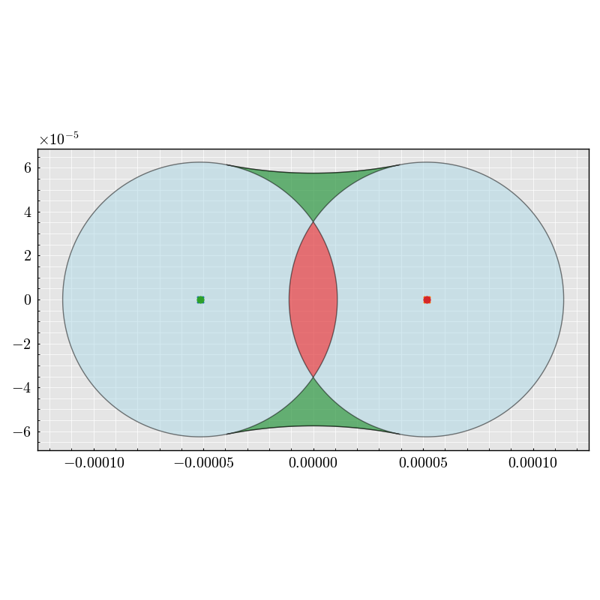
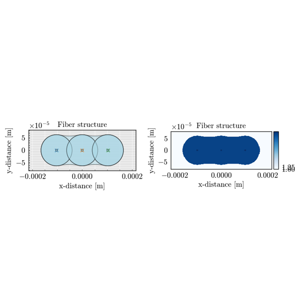
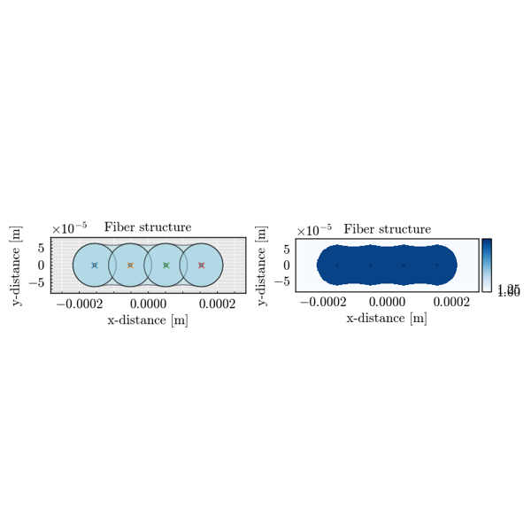
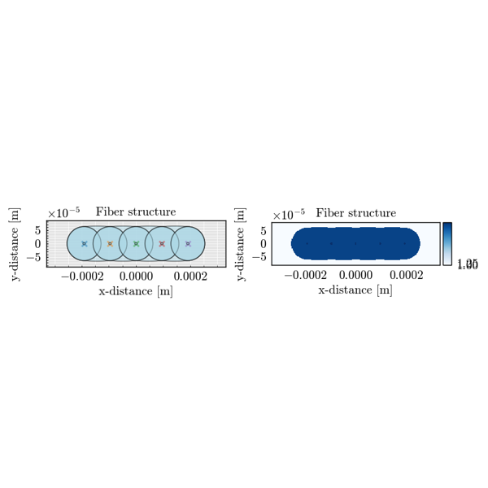
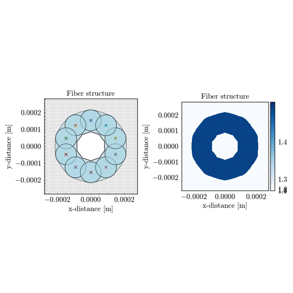
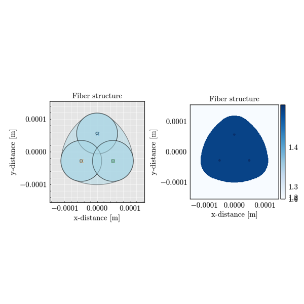
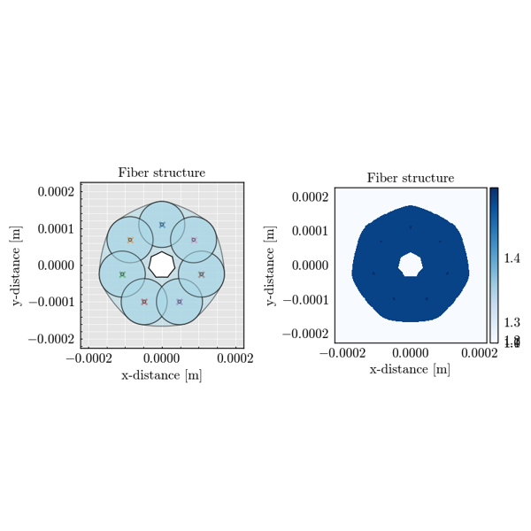
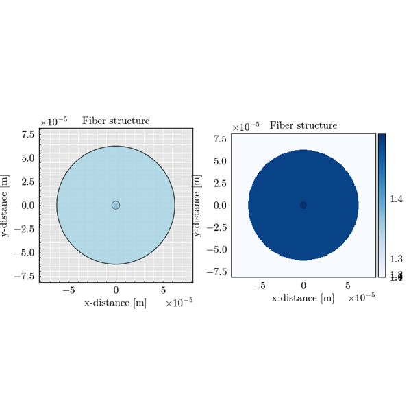

Coding examples#
Explore our gallery of examples demonstrating the usage of FiberFusing. These examples range from general API usage to specific applications, presented in a tutorial format to guide users through practical implementations.
Extra Examples#
Loading and plotting a graded-index fiber structure
Loading and plotting a graded-index fiber structure
Loading and plotting a step-index fiber structure
Loading and plotting a step-index fiber structure


Effect of core randomization
Effect of translation
Geometry Examples#

3x3 Line - Geometry Visualization
3x3 Line - Geometry Visualization

4x4 Line - Geometry Visualization
4x4 Line - Geometry Visualization

5x5 Line - Geometry Visualization
5x5 Line - Geometry Visualization

10x10 Ring - Geometry Visualization
10x10 Ring - Geometry Visualization
2x2 Ring - Geometry Visualization
2x2 Ring - Geometry Visualization

3x3 Ring - Geometry Visualization
3x3 Ring - Geometry Visualization
4x4 Ring - Geometry Visualization
4x4 Ring - Geometry Visualization


7x7 Ring - Geometry Visualization
7x7 Ring - Geometry Visualization

1x1 Geometry Visualization